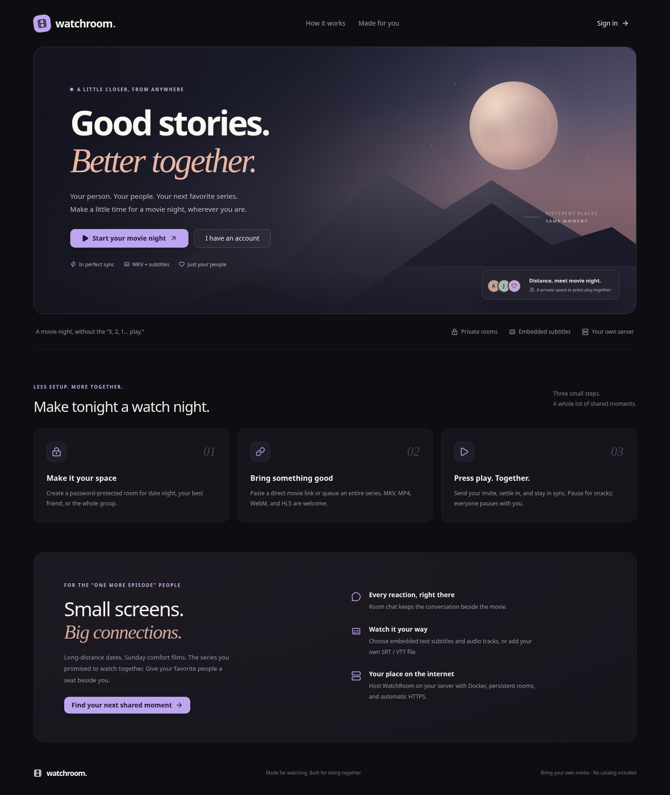

♙01
Make it your space
Create a password-protected room for date night, your best friend, or the whole group.
A LITTLE CLOSER, FROM ANYWHERE
Make a little time for a movie night, wherever you are. Watch your favorite films and series in sync with the people who make them better.
LESS SETUP. MORE TOGETHER.
Three small steps.
A whole lot of shared moments.
Create a password-protected room for date night, your best friend, or the whole group.
Paste a direct movie link or queue an entire series. MKV, MP4, WebM, and HLS are welcome.
Send your invite, settle in, and stay in sync. Pause for snacks; everyone pauses with you.
YOUR ROOM, YOUR PEOPLE
The player, conversation, and next episode all live together. Your friends feel close, even when they're far away.
YOUR PLACE ON THE INTERNET
Self-host with Docker.
Choose a domain or an IP.
The interactive installer sets up Docker, asks how friends will reach the server, and checks that WatchRoom is running.
# Get WatchRoom
git clone https://github.com/MohammadAliMehri/watchroom.git
cd watchroom
# Start the friendly setup
sudo bash deploy.shHave Docker ready? See the manual Compose guide.
1 CPU / 1 GB can work for a tiny room with direct-play media. MKV conversion needs more breathing room. See server sizing →
TUNED TO FEEL SIMPLE
Most people can use the interactive installer as-is. For a manual setup, these are the main environment settings.
Read the complete deployment guide →DOMAINHostname Caddy uses to provide HTTPS.ALLOWED_ORIGINSExact public URL allowed to connect to the app.PORTLocal Express port. Defaults to 3000.DB_PATHSQLite location for accounts, rooms, and playlists.MEDIA_DIRTemporary HLS and subtitle conversion cache.A LITTLE CLOSER, FROM ANYWHERE
A calm, cozy home for your next shared story.

Take a closer look ↗FOR THE “ONE MORE EPISODE” PEOPLE